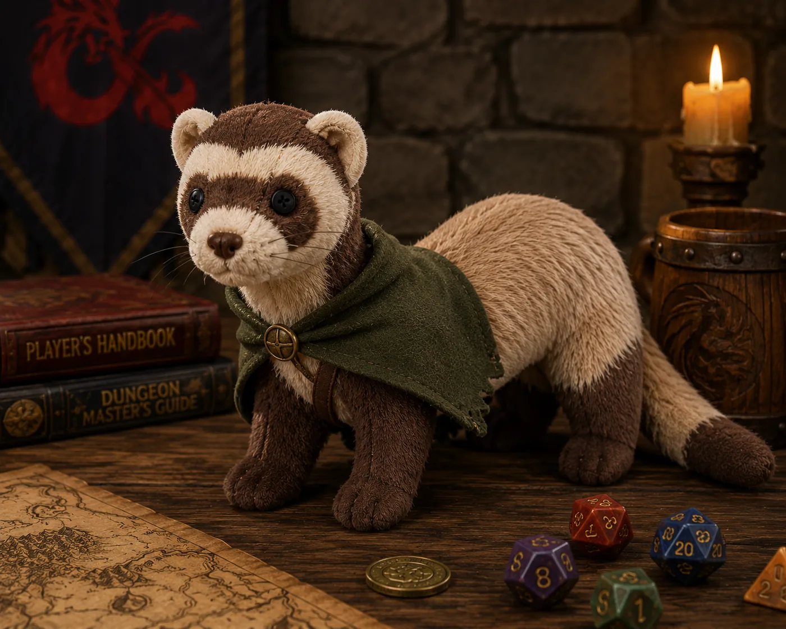

„Dla wszystkich — wcielenie chaosu. Dla siebie — wolna od wszelkich okowów.”
Postać
| Rasa | Ragborn — Knick-Knack (homebrew, MonkeyDM) |
| Klasa | Sorcerer — Wild Magic |
| Background | Urchin (pełny reflavor uliczny) |
| Rozmiar | Small — pluszowa fretka, guziki zamiast oczu, zielona pelerynka |
| Charakter | Chaotyczny (rasowo i z natury genezy) |
| Szybkość | 25 stóp |
| Status | postać zapasowa — wchodzi do gry w razie śmierci Jacka Leotherna. Wejście na poziomie 7, bez RP na start. |
| STR | DEX | CON | INT | WIS | CHA | |
|---|---|---|---|---|---|---|
| Point Buy | 8 | 14 | 14 | 8 | 12 | 15 |
| Rasa | — | — | +2 | — | — | — |
| Finał | 8 (−1) | 14 (+2) | 16 (+3) | 8 (−1) | 12 (+1) | 15 (+2) |
INT 8 to wybór świadomy: Ragborn „rozumieją język, lecz są nie więcej niż dziećmi”. CON 16 = solidne HP na k6 i mocna koncentracja; CHA to urok dziecięcej śmiałości.
| HP | 51 (7k6, CON +3) |
| AC | 12 (15 z Mage Armor) |
| DC czarów | 14 (8 + 3 biegłość + 3 CHA) |
| Atak czarem | +6 |
| Sloty | 4 / 3 / 3 / 1 |
| Sorcery pointy | 7 |
Orkiestra lokatorów
Fretka jest naczyniem dzikiej magii, nie uczennicą zaklęć z ksiąg. W środku, w miejscu, gdzie szyte zwierzęta trzymałyby serce, mieszka nie jedna magia, lecz mała orkiestra: dyrygentka i lokatorzy, z których każdy to jedna szkoła magii.
Iskra Ewokacja
Dzika magia z płaczu Aureliana na trakcie. Dyrygentka — sięga po resztę, ustawia, improwizuje. Przy Surge’u przejmuje pałeczkę.
Kotwica Abjuracja
Błogosławieństwo Świetlistej Pani znad gorączki dziecka. Osłona, trzymanie, „nie odpłyń”. Pole: morskość.
Nitka Conjuracja
Krzywy znak dziecięcej ręki przy pożegnaniu. Wiązanie, szycie z powietrza, prucie i przerzucanie.
Brzęk Transmutacja
Opary alchemika Borowika, wsiąkłe godzina po godzinie. Przemiana materii. Brzęczy, pachnie osą i pracą.
Trociny Nekromancja
Jej własna natura nie-życia. Cisza, znieruchomienie. Jedyny lokator ku spoczynkowi. Wspiera metamagię Subtle.
Fey Iluzja + Dywinacja
Przyjaciółka złapana po drodze — jest i nie ma. Jedyna, która lubi chaos Iskry zamiast się go bać.
Chaos siedzi w „jak”, nie w „co”.
Rzuć czar
Wybierz zaklęcie, a strona wylosuje kadr z Kompendium — obraz rzutu. Czar z kręgu 1+ zużywa slot i wywołuje test dzikiej magii. Stan zapisuje się w tej przeglądarce.
Sloty czarów
Sorcery pointy
Tides of Chaos
Wild Magic Surge — wariant tabeli i wyzwalania do ustalenia z DM-em. Strona rzuca k20 po czarze z kręgu 1+ (na 1 — przypływ) i podaje k100 do tabeli. Komediowe wersje z Kompendium: teleport-kichnięcie, Fireball-beknięcie, wymuszony Polymorph na owcę z trocin-wełny.
Archiwum
- Kompendium FretkiPostać, Wygląd, Magia, Ekwipunek, Rozwój, Geneza — oraz obie księgi w zakładkach.Strona229 KB
- Fretka Dossier v4.1PDF3,4 MB
- Sic Parvis MagnaHistoria rodu Carradori vel Corvenna, rozdziały I–IX.PDF129 KB
- Księga pod podszewkąHistoria Fretki.PDF115 KB
- WizerunekPNG2,1 MB